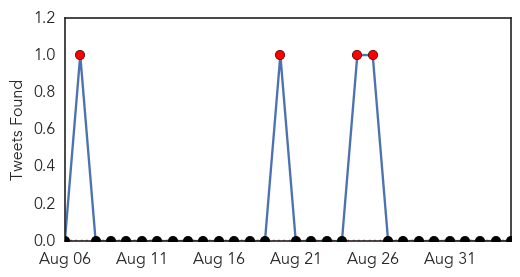
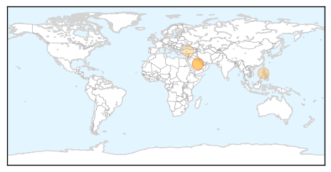
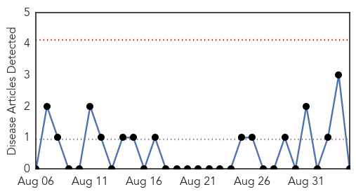

MERS
30-Day Web Trend
0 alerts, 0 warnings
30-Day Twitter Trend
15 alerts, 3 warnings

Article Locations
Article Confidences
Top Articles:
Top Tweets:
- 0.567
- AFD Blog `Saudi MOH: 6 New MERS Cases (3 in Riyadh, 2 in Namas, 1 in Kharj)' MERS-CoV http://t.co/GjunDmEAaM
Mold/Fungal
30-Day Web Trend
0 alerts, 0 warnings

30-Day Twitter Trend
0 alerts, 0 warnings

Article Locations

Article Confidences

Top Articles:
-
No articles found for Sep 04, 2015
Top Tweets:
-
No tweets found for Sep 04, 2015